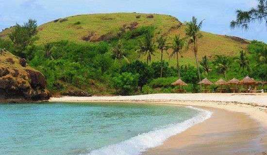
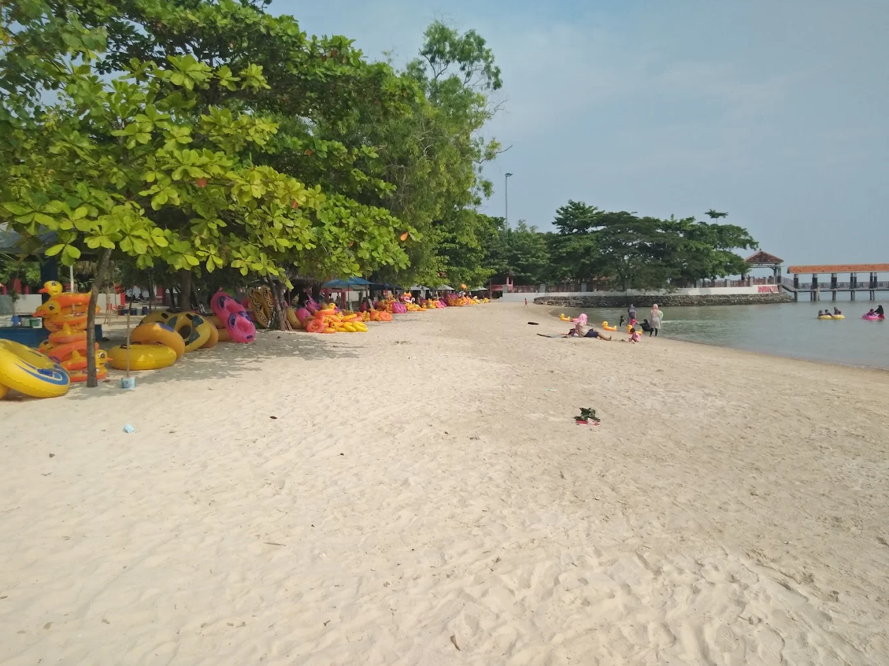
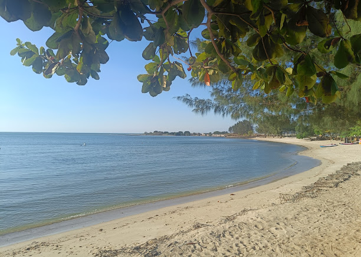
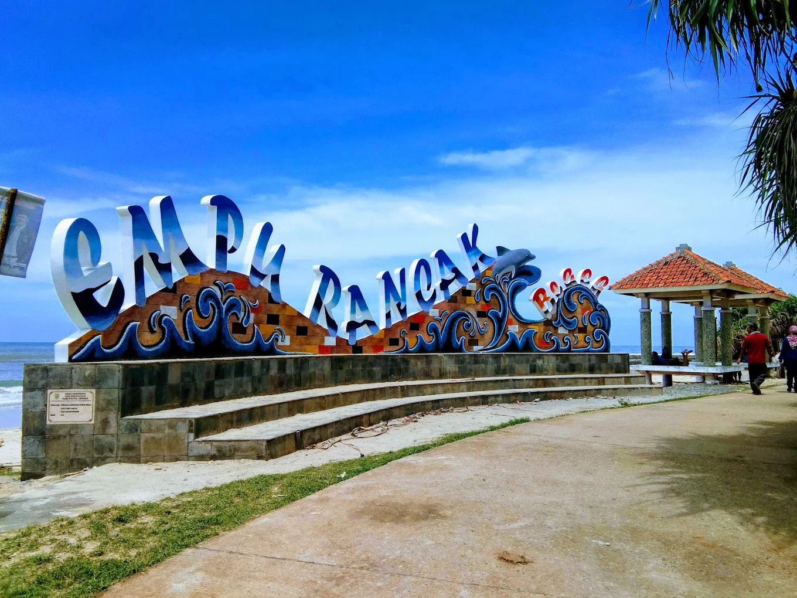
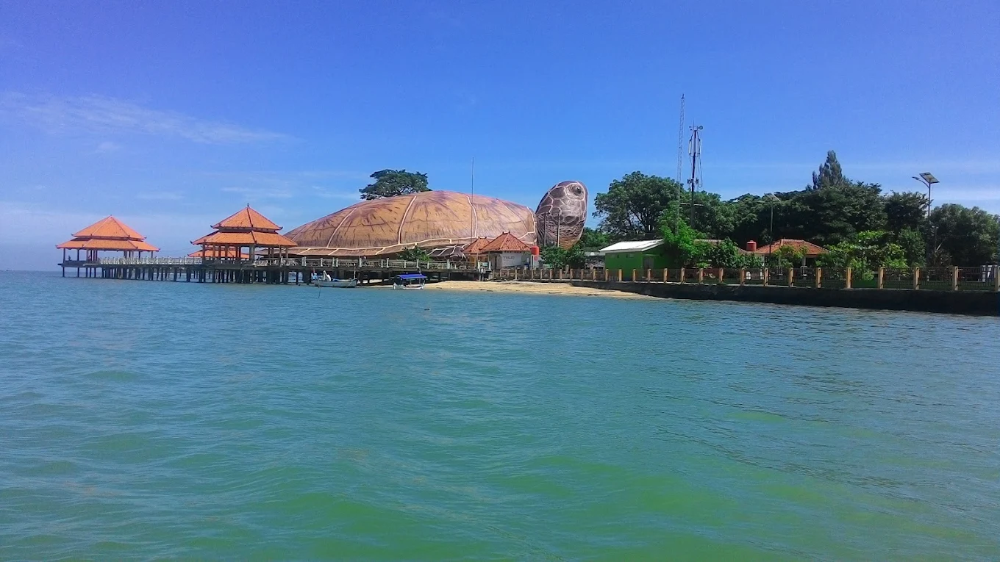
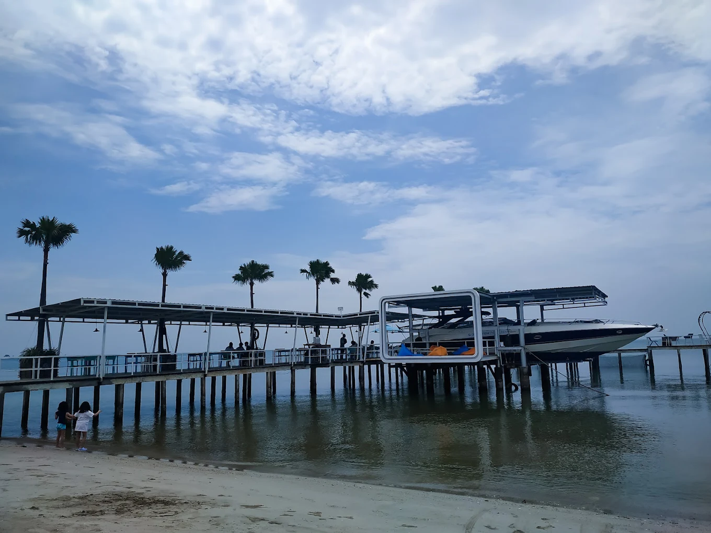
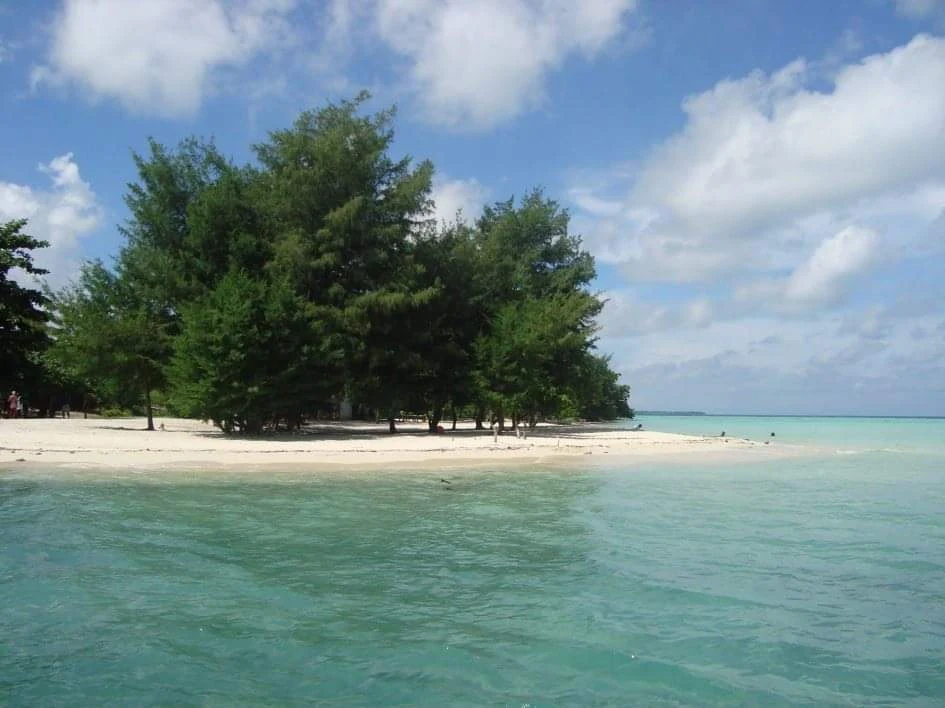
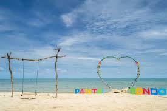
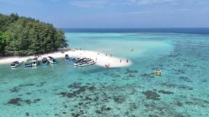

Pantai merupakan tempat wisata alam yang menawarkan keindahan hamparan pasir, deburan ombak, dan suasana yang menenangkan. Udara yang sejuk serta pemandangan laut yang luas menjadikan pantai sebagai destinasi favorit untuk berlibur dan menikmati keindahan alam.

Wisata pantai ini menawarkan pemandangan indah dan fasilitas menarik dengan harga yang sangat terjangkau untuk semua kalangan.
Wisata pantai ini telah memiliki sertifikat resmi sehingga keamanan dan kualitasnya terjamin.
Pelayanan di wisata pantai ini dikenal ramah tamah sehingga pengunjung merasa nyaman dan betah.

Berjarak sekitar 6 km dari pusat kota, pantai ini ikonik dengan pasir putihnya yang landai dan ombak yang tenang, cocok untuk wisata keluarga.

Berlokasi di Desa Sekuro, pantai ini memiliki air dangkal dan tenang, sangat cocok untuk berenang dan bermain anak-anak.

Terletak di Karanggondang, pantai ini terkenal dengan suasananya yang asri dan deretan warung kuliner seafood di pinggir pantai.

Terkenal dengan wahana Kura-kura Ocean Park, lokasinya sangat strategis di pusat kota dan menjadi titik penyeberangan utama ke Taman Nasional Karimunjawa.

Terletak di Desa Teluk Awur, pantai ini memiliki garis pantai yang landai dan air yang tenang, menjadikannya lokasi favorit untuk bersantai.

Pulau kecil yang harus dijangkau dengan perahu dari Pantai Kartini atau Bandengan, menyajikan wisata bawah laut, hutan mangrove, dan makam Syekh Abu Bakar.

Pantai Bondo Bangsri atau hanya Pantai Bondo adalah salah satu objek wisata pantai yang ada di Kabupaten Jepara. Pantai Bondo menawarkan keindahan pantai dengan pasir putih

Kepulauan ini terkenal dengan air laut sebening kristal dan terumbu karang yang menakjubkan, menjadikannya destinasi utama untuk island hopping, snorkeling, serta bersantai menikmati matahari terbenam.